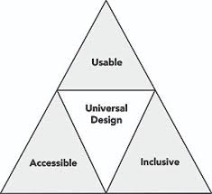

WHAT?
So what exactly is universal design?
Universal Design is designing technology to be inclusive and accessible for all, and this can come in many forms.
From making your webpages and apps screen reader friendly to creating an app that allows blind runners to have an automated guide on a trail, universal design is designing with making your products target audience as large as possible.
This image from the University of Washington displays 3 important elements that you should always consider when designing. Universal Design is obtained when you maximize all 3 of Usability, Acessibility and Inclusivity.
Usability
Accessibility
Inclusivity
Usability in universal design means that the technology is intuitive, simple, and has tolerance for error. We want people who are unfamiliar with certain technology or people with learning or cognitive disabilites able to use this technology, so Usability is a vital element to universal design
Accessibility in Universal Design means that the technology is flexible, it can be used in multiple ways to work with people with certain disabilities. Whether blind, deaf, or other motor disabilities, we want to design to include features that help these people. Screen readers for the blind, accurate and helpful descriptions if necessary, and tabbable pages for people with motor skills.
Inclusivity in universal design means making users feel welcome and equal. Try to design with all age groups and disabled groups in mind.